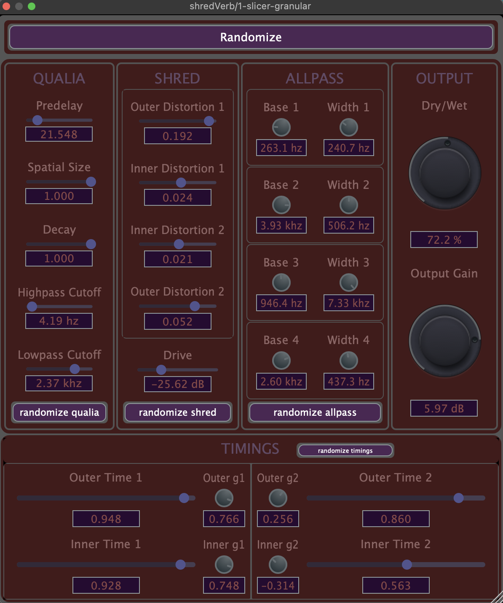
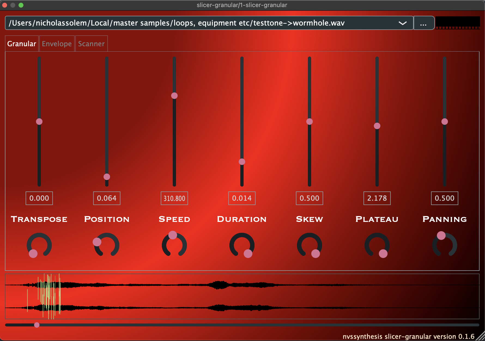
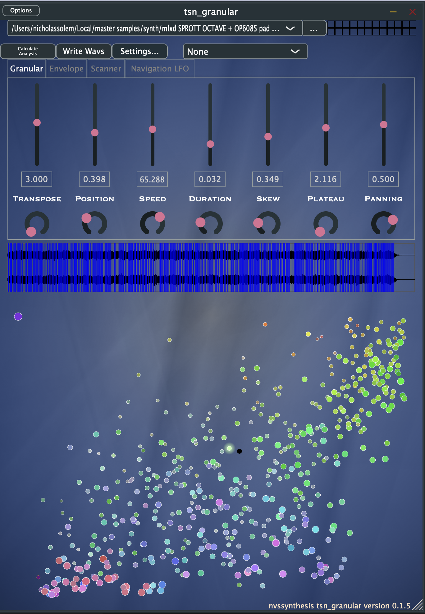

this page is under construction. the links should work.
Here are my plugins under development. Source code is available for all to compile on your own machine. Only CSG currently provides a binary for MacOS. I am working on getting the other plugins compiled and available for download. Contact me if you are interested but having any troubles!.
Shredberb is a FDN-based reverb with a twist: it is composed of audio-rate modulatable allpass filters This allows the reverb to be twisted into insane distortion territory.
this instrument is a basic granular synth. It was developed as the backbone of the more advanced TSN Granular.
TSN Granular is a granular synthesizer that uses a multidimensional timbre space to access various grains as events from the analyzed audio file. This project is very much under development still!
